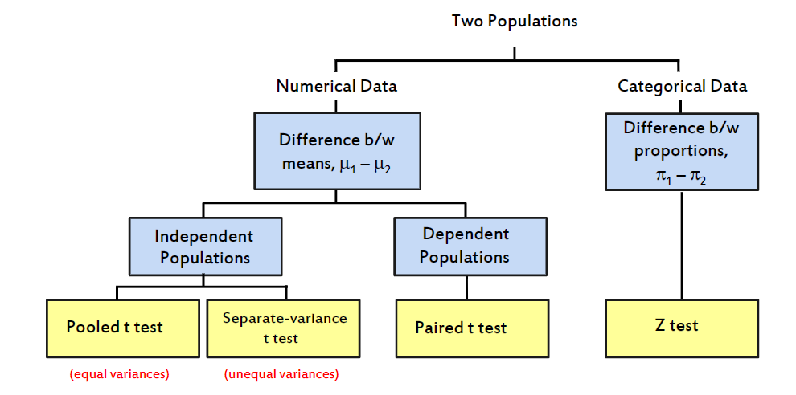

By changing the Heading 3 above with the following teal, turquoise, orange or pink you can change the colour theme of your CloudFirst CloudDeakin template page.
When this page is published the Heading 3 above will be removed, but it will still be here in edit mode if you wish to change the colour theme.
Note: There is no need to delete this instruction or the Heading 3 above - they are only visible in edit mode and will be removed when your page is published.
See the CloudFirst html template - additional features. (right-click and open in a new tab)
There are two key inferential tools that are used in statistics to make decisions regarding unknown population parameters: confidence interval and hypothesis test. We use confidence interval estimation when we have no idea about the value of the population parameter being investigated. We use hypothesis tests when we have some idea of the value of the population parameter being investigated, or when we have some hypothesised value against which we can compare our sample results.
Null Hypothesis: The statement about the population parameter that will be assumed to be true during the conduct of the hypothesis test. The null hypothesis usually involves equality.
Alternative hypothesis: The hypothesis that includes all population values not included in the null hypothesis; the alternative hypothesis cannot assume equality.
Type I Error Rejection of true null hypothesis (i.e., Rejection of null hypothesis when in fact it is true) via statistical hypothesis test. The maximum allowable probability of committing a Type I error is the level of significance.
Type II Error: Fail to reject the false null hypothesis (i.e., Fail to reject the null hypothesis when it is true) via statistical hypothesis test.
P-value: P-value is the observed significance level of a hypothesis test. If the p-value is less than the level of significance, then we have sufficient evidence to reject the null hypothesis, otherwise, we do not have sufficient evidence to reject the null hypothesis.
In this topic, we are going to extend the concept of a hypothesis test (and confidence intervals) to situations where we have more than one group/population/sample. This is important because in business we compare different businesses or business units. Not only to compare whether they are different but also need to know which one is performing better or worse. The following diagram shows relevant statistical tests at our disposal.
